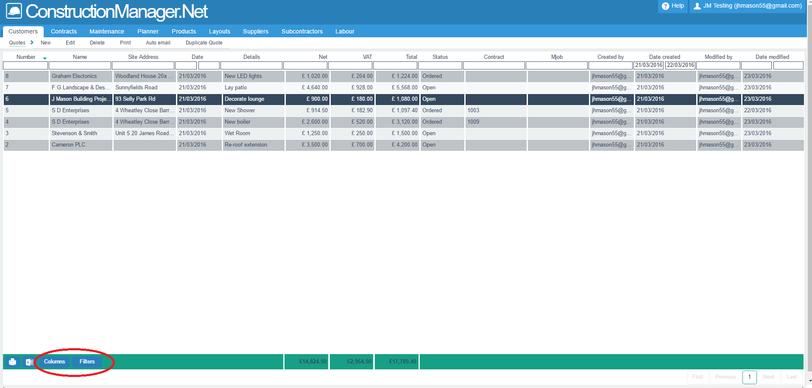

Create, modify and manage your quotes.
Contents
The Quotes List
Quotes are accessed via the Customer tab on the main menu
The quotes list displays all of your quotes in a list. From this list, you can:
- Search for quotes on the list (see lists section).
- Create a new quote
- Edit existing quotes
- Delete quotes
- Print quotes
- Email quotes
- Export the list as a spreadsheet

The list can be filtered by entering selection data in the blank boxes above each column.
Columns to view can be controlled by the "Columns" button (circled in red).
The Quote Screen
The quote screen has five tabs: Details, Items, Terms, Analysis and Notes.
Details
On the details tab, you control the information that you would normally associate with the quote header,
such as the customer, contact details, address and date.
You can also modify the header and description of works text.

The quote no. is auto-generated by the system, or the user can select manual quote no.s in settings.
Data to be entered includes:
- Customer: Choose a Sage customer, if the customer is already in Sage, OR
choose a quote customer, OR
create a new quote customer using the "+" button.
- Branch: This allows additional contract details to be stored with a Customer Account.
E.g. Balfour Beatty may have many offices and contacts.
Select a branch or choose a new branch address from the drop down box of branches associated with the selected customer.
This will pick up the contact details from the branch address rather than the customer account address.
- Header: Enter a short description of the quote.
NOTE - This will become the Job Description when an order is placed.
- Decription of works: (Optional) Enter a longer, more detailed description of the job. This is a multi-line, free form text field.
- Footer: (Optional) Enter any text that you wish to display at the foot of the quote.
- Contact name: This defaults to the contact name set up on the customer account record, or branch address if selected,
but can be overwritten.
- Contact email: This defaults to the contact email address set up on the customer account record,
or branch address if selected, but can be overwritten.
- Contact tel: This defaults to the contact telephone no. set up on the customer account record,
or branch address if selected, but can be overwritten.
- Status: A new quote will default to Open, but can be changed later to Ordered,
Lost or Inactive.
An open quote that is converted to an order, via the button at the top of the screen,
will be automatically changed to a status of Ordered.
This field is used for reporting purposes.
The status list can be edited in Settings.
- Date: This defaults to today's date but can be overwritten.
- Site address: This defaults to the customer's address but can be overwritten.
Pick an address from the drop down list, or create a new address for where the work is to be carried out.
.
Items
The items tab contains the body of the quote.
Here you control the items that comprise the work itself, and their costs and prices.

Data to be entered on the items screen includes:
- Product code: Type in or select a code, from TEXT, M1 or Product codes:
- Code TEXT: For text entry, with prices.
- Code M1: For a message line only, with no prices.
- Product Codes: This will pick up data from the product table (unit type, costs), which can then be over-written.
- Description: Enter a short description.
- Long Description: Enter a longer description, if required.
This will display under the short description on a printed report.
- Qty: Enter a quantity of the product being quoted.
- Unit type: Enter a unit type (e.g. NO, Each, Kgs, Days etc.).
- Cost price (£): (Optional) Enter a cost price. This can be used either with the margin entry to calculate sales price,
or with the sales price to calculate the margin.
- Sales price (£): Enter a sales price to calculate the margin..
- Margin (%): Enter a margin % to calculate the sales price, from the cost price.
- Net (£): This is a calculated field for display only. It shows the calculated net value of the line
(sales price * qty).
- Tax code: Select a tax code from the drop-down list. This will be used to calculate VAT on the line.
The default is set to T1 - 20%. This can be edited.
- VAT (£): This is a calculated field. It shows the value of VAT.
- Total (£): This is a calculated field. It shoes the total value of the line.
In addition, the following fields can be added using the columns button:
- Tender code: A code entered here will feed through when the quote is allocated to a Job.
It can then be used for advanced budget vs. costs reports.
- Discount (%): Enter a discount%. This will reduce the calculated net value of the line.
The screen can be manipulated using the following Buttons (circled in red):
- Move down: Highlight a line and press this button to move the line down.
- Move up: Highlight a line and press this button to move the line up.
- Delete: Highlight a line and press this button to delete the line.
- Add item: Press this button to create a new line.
N.B. Once any items have been entered, the quote can be saved at any time by pressing the Save Button.
This should be done frequently to minimise the chance of data loss.

Terms
The Terms screen gives you the opportunity to enter text that will appear at the end of the quote.
It provides the ability to store different terms or comments in Products and then select them from the drop down menu.
You can access products that have been marked as text items, and pull through their associated text or simply key in text lines.
Terms can then be displayed separately from the items, at the end of your quote reports.
A typical example of Terms would be Payment Terms.

Data to be entered on the terms screen includes:
- Code: Select a code from the drop-down box, or leave blank.
- Short Description: This will default to the short description attached to the code, or you can over-write it.
If no code is entered, you will have to key in a description.
- Long Description: This will default to the long description attached to the code, or you can over-write it.
If no code is entered, you will have to key in a description.
Analysis
The analysis screen allows you to enter reference and analysis data on a quote.
This can be used for reporting and filtering on lists.

Data to be entered on the analysis screen includes:
- Ref: A text reference for the quote.
- Ex ref: An external text reference for the quote.
- Classification: Select from a drop-down box of different types of job / work records.
This links to the Classification field for a job, once an order is placed.
- Job analysis: Select from a drop-down box of different types of job analysis.
This links to the Job Analysis field for a job, once an order is placed.
- Project manager: Select from a drop-down box of different managers responsible for the job.
This links to the Project Managers field for a job, once an order is placed.
Notes
The notes screen allows you to enter time-stamped and signed notes onto a quote.
Data to be entered on the notes screen includes:
- New Note: Enter note text and then press the Add Note button.
Notes already entered will be displayed underneath.
Creating an Order from a Quote

When an order is received, the quote can be converted to an Order using the Order button
(circled in red).
This will bring up the "Create Order" box, where you select a new or existing contract
or a maintenance job / contract.
If you wish to detach a quote from a contract, that must be done through the Contracts page.
Invoicing a Quote
Once a quote has been converted to an order and attached to a contract, it can be invoiced
using the invoice button (circled in red). This will create an invoice record in CM50, and post to Sage.